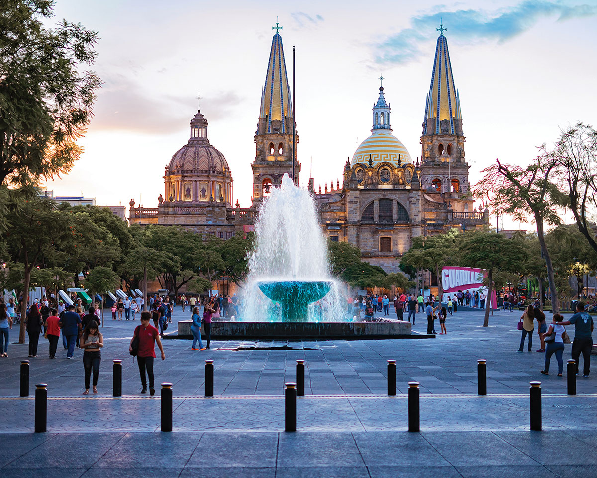
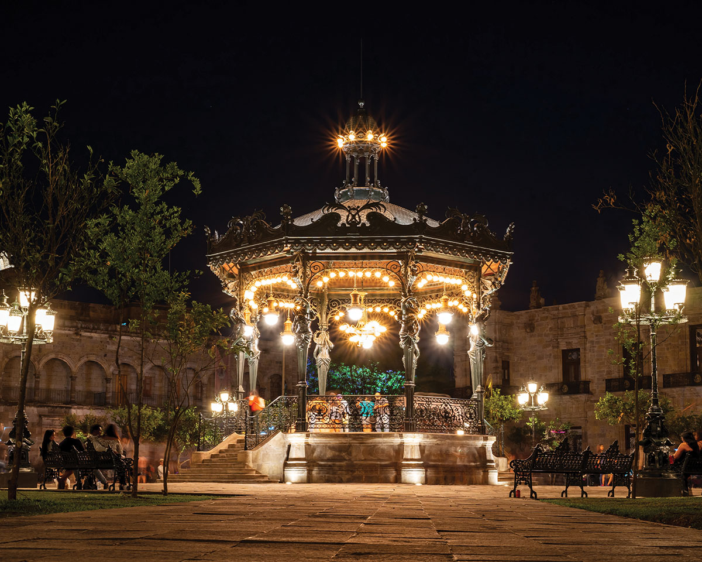

The Vampire Tree of Guadalajara and Other Legends of El Panteón de Belén
By Martha Blanchfield ◊ October 24th, 2021
The legend of the vampire tree took root in the mid-1800s in the Barranquitas neighborhood of El Carrizal, Guadalajara. Citizens recounted an ongoing string of deaths occurring only at night and happening to small animals in the region. Initially, it appeared that the deaths were from natural causes. However, that would soon change.
As weeks wore on, the phenomenon persisted. An investigation ensued and, upon closer inspection, it was learned that the body of each animal corpse was marked by two closely positioned punctures. Furthermore, that not a drop of blood remained inside the corpse. Shortly thereafter, this same tragedy began to happen to children, mostly newborns. Mothers were finding their babies in their cribs, dead, drained of blood. Townsfolk were soon driven to remain indoors after dark. Locals, heralded for being great nighttime revelers, instead rushed home each evening to pray, seeking to summon holy powers to eradicate this supernatural being and vanish it from the city. One evening an ardent group, weary of the ongoing attacks, ventured out to track down and eliminate the force, by this time deemed to be a vampire. Here is where the legend branches off into three limbs. One storyline states that the mob rounded up suspects, singling out a ghostly-looking man, being pale white and most resembling a vampire. They drove a stake through his heart to kill him.
“Lore says that if one cuts the trunk of the tree, blood will seep out (the blood of the vampire that lies buried below)…”
Another variation recounts the mob entering homes of individuals and, locating one man asleep in his bed, driving a stake through his heart. Both legends say that the body was then dragged to the Santa Paula Cemetery. Another rendition has the men setting a trap and ensnaring a more demonic stalker. They drag the beast’s body to the Santa Paula Cemetery and, with a long stake, pierce its heart, leaving the monster to perish in place. The following morning, the corpse was covered with a thick concrete plate to trap it in place. Months later, the wooden stake used to kill, pierced the concrete surround and began to grow, becoming a large tree.
Lore says that if one cuts the trunk of the tree, blood will seep out (the blood of the vampire that lies buried below). Or, that if a person breaks one of the branches, not only will it gush blood, but its leaves will impart a red residue on the skin. For nearly 200 years, the tree has been growing. Its twisted vast network of roots undulate and wrap around adjacent graves and markers. The day will come when this gnarl will break the barrier slab covering the vampire, allowing him to escape and seek revenge on Guadalajara. In a site marked by death, this tree is now protected with a fenced enclosure to preserve its life.
The tree stands within the historic walls of the Panteón de Santa Paula (Santa Paula Cemetery) in a northern barrio of Guadalajara’s historic center. The site, better known as the Panteón de Belén, is regarded for its historical mishmash of architecture. It is better known for the legends it holds. Following the Mexican War of Independence (September 16, 1810, to September 27, 1821), Guadalajara faced several famines and epidemics. Cholera in particular, killed a large proportion of the population. An additional cemetery was needed to bury the victims.
In 1843, Bishop Diego Aranda y Carpinteiro requested that the orchard of the Hospital of St. Michael be turned into a graveyard. In 1848, famed architect Manuel Gómez Ibarra was hired to design and construct the site. Thirty years prior, Gomez Ibarra had been engaged to redesign the spires of the Catedral de Guadalajara, which had been destroyed in an earthquake. The purchased plot of land was divided into two sections, or patios: one for the poor, one for the wealthy. Following the cemetery’s closing in 1896, the land comprising the poor section was eventually used as a site for a hospital. The plot was demolished in 1967 as most of the graves had become unrecognizable. The plot for the wealthy has remained intact and is today a museum.
Marking center within the Panteón de Belén is a grand mausoleum, with 120-foot tall tiled pyramid top. On its overhead corners, are four statues of wailing women. Below this shrine is an underground chapel with 64 burial slots, constructed to house illustrious males of Jalisco. Gómez Ibarra himself was placed there, as were José Rolón, composer; Joaquín Angulo, member of the Jalisco Forum and a state governor; Ignacio Herrera y Cairo, surgeon and defender of indigenous people’s land rights and others. The bodies were interred until 1957, after which all remains were transferred to the Rotonda de los Jaliscienses Ilustres located several blocks away.
During the site’s construction, only two of the four arcades were built. The northern and western colonnade hallways each feature 50 arches. The northern wall contains 15 burial slots between each pair of arches; the western wall contains 18 slots between its arches. The two connected colonnades feature rows of Cantera stone columns capped by classical Ionic finishes. Within the courtyard (roughly the size of a city block) are various tombs, markers and mortuary monuments of varying architectural styles. The graveyard was operational for 50 years.
The Story of Nachito
Another legend from the Panteón de Belén is about a small boy who was afraid of the dark. On May 24, 1882, an ominous storm was en route to hit the city of Guadalajara. The parents of 10-year old Ignacio Torres Altimirano -- - “Nachito,” -- were preparing him for bed. Because he was extremely afraid of the dark, his parents and grandparent always positioned two lit torches immediately outside his bedroom window. He slept with the windows open.
That night, the winds blew fiercely, extinguishing each torch. In the morning, Nachito’s mother entered his bedroom. Immediately sensing the chill and pall that fell over the space, she rushed to her son’s bedside. There, she found a motionless Nachito, cold and lifeless. Doctors later determined that Nachito had died of a heart attack during the evening, likely due to extreme fright fueled by his pathological fear of the dark. Rumors associated with his passing soon started, quickly spreading a belief that the heart of Nachito had exploded inside his chest, and that his death was brought on by a horrible curse or even demons at play. The boy’s body was soon placed in a coffin and laid to rest at a nearby cemetery, El Panteón de Belén. However, the next morning, keepers of the cemetery found his coffin exhumed and positioned aside his grave. Fearful and in disbelief, his parents asked caretakers to quickly bury him once more. On the second morning after the funeral, the coffin was again found lying on the ground as it had been found the prior morning. This scenario occurred for the following nine mornings. A cause was never determined; his parents could only reason that Nachito’s extreme fear of the dark was driving him to the light. Placement below the ground was perpetuating his terror, even after death. His parents ordered a new coffin made of stone and fashioned with four short pillared-legs to keep his body from touching the ground, allowing it to be bathed in sunlight. The tomb was placed at the above ground.
To this day, the legend of Nachito keeps a grip on visitors to his grave. Some claim to have seen or heard a young boy; others have witnessed mysterious balloons hovering over the cemetery—as if held by a child's hand. Most enduring is the notion that Nachito is a talisman: individuals will leave a small toy for the boy, plus a secret wish. Anyone removing an item will succumb to tragedies until the toy is returned. And, as to the validity of the small ball that rolled by itself away from, and back to, the grave, no one can be sure. So popular is he that offerings to placate Nachito’s soul quickly pile up. To clear the grave, cemetery caretakers routinely remove and donate items to local hospitals, the toys being given to terminally ill children. Other lore and legends are associated with the Panteón de Belen—a pirate, the lovers, plus tales about a monk, a nun and more. Mysticism prevails, and to this day individuals claim visions of ghostly beings roaming the cemetery. Guests may visit for guided day or evening tours that recount 19th-century stories of the cemetery.
The Best Things to Do in Guadalajara, Mexico
By Lauren Cocking ◊ August 17, 2021
Situated at the heart of Jalisco state, the birthplace of tequila and mariachi, Guadalajara is not only Mexico’s second city, it’s also just about as authentically Mexican as you can get. Yet too many visitors overlook this big city with small-town charm and youthful appeal.
“Guadalajara is not only Mexico’s second city, it’s also just about as authentically Mexican as you can get…”
What to know
Guadalajara is highly navigable on foot, which is good because the city’s subway system consists of just two limited coverage lines and a third that’s been in construction for years and looks no closer to completion. Getting to the land of the tapatíos (people from Guadalajara) is slightly more streamlined, with direct flight routes available from both east and west coast US cities, including L.A. and New York.
And when should you visit? September sees both Mexican Independence Day on the 16th and the International Mariachi Festival in the weeks prior, while October welcomes the month-long, city-wide celebration of arts, food and culture at the Ferias de Octubre. Meanwhile, November’s Feria Internacional del Libro (the world’s second biggest book fair) is chock-full of events. However, the weather is favorable year-round.
What to do
As with most Mexican cities, its logical to start your exploration from the historic center. In Guadalajara, almost all the notable historic buildings fan out from four pleasant plazas, each with their own distinct appeal. Sit on a wrought-iron bench next to the Palacio de Gobierno in Plaza de Armas; admire the façade of the iconic twin-spired cathedral and its sunshine yellow color scheme from Plaza Guadalajara. Just off of Plaza Liberación is the 19th century Teatro Degollado with its ornate mosaic depicting the nine muses and sturdy Corinthian pillars; finally, learn about influential people from Jalisco state alongside the Rotunda de los Jalicienses Ilustres.
Moving further east, the 18th century UNESCO-listed Hospicio Cabañas, which houses some spectacular José Clemente Orozco murals, shouldn’t be skipped, and while you’re in the area, stop by Latin America’s largest indoor market, the Mercado San Juan de Dios Browse the multi-level complex of leather products (ground floor), your standard tourist tat like keychains and magnets (everywhere) and knock-off shoes and clothes (second floor). Half the battle is not getting lost.
For art, the ever-evolving Travesía Cuatro showcases some excellent contemporary up-andcomers from around the world, while Zapopan’s Galería Curro dabbles in displaying unconventional, multidisciplinary work. Either way, both serve as a nice reminder that Mexico’s capital isn’t the be all and end all of the country’s art scene. If you’re looking to get a break from the city, head northeast to the Barranca de Huentitán or northwest to the Bosque Colomos. Soak in the views or go for a hike at the former and feed the squirrels in the Japanese garden at the latter.
What to eat and drink
Guadalajara is categorized by casual dining rather than Michelin stars, although both Alcalde and La Docena Oyster Bar did make the Latin America Top 50 Restaurant List in 2017. Even so, the Mercado de Santa Tere in the neighborhood of the same name makes for a quintessential stop, where you can dive into Mexican classics like deep-fried, sauce-doused quesadillas.
If you’re looking for an equally casual, café breakfast then Piggy Back, with its white and pastel color scheme, should make your itinerary. Grab a table outside, order a giant plate of chilaquiles washed down with a latte. Alternatively, especially if you’re a coffee fiend, exploring the swathe of cafés which dot the cool, on-the-rise Americana neighborhood wouldn’t go amiss.
For something a little more regionally specific, and to shift that tequila hangover, tortas ahogadas (literally, drowned sandwiches) are the obvious choice. While everyone claims to have the best, as long as they encase the deep fried carnitas, fresh onion and radish filling in Guadalajara’s trademark crusty birote bread roll you’re good to go.
For something equally as tapatío in flavor, but slightly less messy, the speedy service at Santa Tere’s Karne Garibaldi is a must. Carne en su jugo (‘meat in its juice’) might not sound so appetizing, but this combo of beef bacon and broth, especially when topped with those oh-so-Mexican additions of lime, onion and cilantro, is a winner.
By night, you can’t go wrong with strolling down the lively 15 blocks stretch of Avenida Chapultepec. Populated with skateboarding teens by day, it really comes alive at night with impromptu dance tutorials, market stalls, and more affordable bars than you have time to visit. But for something more than commercial Mexican beers, head to Casa Trapiche just two blocks off Chapu—as it’s known to the locals—for some craft ale tasting flights, or down to De La O for tiki culture and pulque cocktails. 
Where to stay
When it comes to bunking down in Guadalajara, you’re spoiled for choice thanks to the plethora of artsy, boutique properties that have sprung up in recent years, as well as the traditional, stately classics that seem to have been on the scene forever. For a swanky stay in one of Guadalajara’s coolest colonias, Lafayette (which edges onto Avenida Chapultepec), book a room at Casa Fayette. Housed in a renovated ‘40s building, an era whose legacy is reflected in some of the stylish décor touches, this three-star design hotel makes up the only Guadalajara entry in Grupo Habita’s impressive portfolio. Alternatively, just a few blocks away there’s Villa Ganz, which sells itself on being the first boutique hotel in the city. However, the décor is distinctly more traditional, with sweeping staircases, plush floral sofas and suites named for Juan Rulfo characters.
Escape the city
For an easy escape, head 20 minutes outside of Guadalajara to Tlaquepaque’s historic center. Stroll the wide, walkable streets strung with multicolored bunting and lined with restaurants, boutiques and art galleries, browse for tiles at Cantú and grab a tray of boiled vegetables topped with crema, cheese and chili from Jardín Hidalgo.
Next, head to El Parián in the evening for a live mariachi show. There, order a cazuela (citrus fruits, juices and tequila). More soup bowl than mug, you’ll only need one. And there’s no visiting Guadalajara, without heading into the tequila heartlands. If you’re feeling flush, you can take the José Cuervo Express or do it yourself with an hour and a half bus ride from the Central Camionera Vieja, Guadalajara.
Take some time to explore the José Cuervo factory courtyard, before joining a distillery tour at the Orendain factory where you’ll get a comprehensive tour, complimentary tastings and a jaunt on a novelty tourist bus.